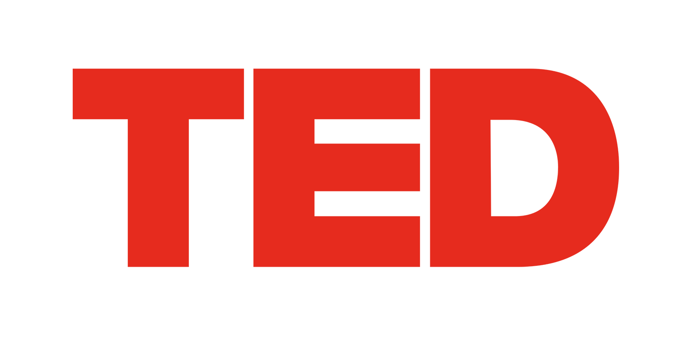

TED é uma organização sem fins lucrativos dedicada ao tema ‘Ideas Worth Spreading’ (ideias que vale a pena partilhar). Tendo iniciado na Califórnia há 30 anos como uma conferência de quatro dias, TED cresceu para apoiar esta missão através
de várias iniciativas. As duas conferências anuais TED convidam pensadores e fazedores líderes mundiais a falar durante 18 minutos ou menos. A maioria destas apresentações são disponibilizadas gratuitamente online, em TED.com. Oradores TED
incluem Bill Gates, Jane Goodall, Elizabeth Gilbert, Sir Richard Branson, Nandan Nilekani, Philippe Starck, Ngozi Okonjo-Iweala, Sal Khan e Daniel Kahneman. A conferência anual TED tem lugar na primavera em Vancouver, no Canadá, juntamente
com o TEDActive, o evento com transmissão simultânea em Whistler. A conferência anual TEDGlobal teve lugar no Rio de Janeiro, no Brasil, em outubro de 2014. As iniciativas do TED nos media incluem TED.com, onde novas talks são
disponibilizadas diariamente; o Open Translation Project, para legendagem e transcrição interativa e traduções de voluntários de todo o mundo; e a iniciativa educacional TED-Ed; TED criou o prémio anual TED Prize, onde indivíduos
excecionais com um desejo para mudar o mundo podem receber ajuda para o poder transformar em ação; TEDx, que apoia indivíduos ou grupos na organização em todo o mundo de eventos locais semelhantes ao TED; e o programa TED Fellows, que ajuda
inovadores de todo o mundo, capazes de mudar o mundo, para amplificar o impacto dos seus notáveis projetos e atividades.
Podes seguir TED no Twitter em http://twitter.com/TEDTalks ou no Facebook http://www.facebook.com/TED.

x = evento organizado de forma independente No espírito das ideias que vale a pena partilhar, TEDx é um programa de eventos locais e auto-organizados que reúnem pessoas para partilhar uma experiência semelhante ao TED. Num evento TEDx,
vídeos com TED Talks e oradores ao vivo são combinados para iniciar ligações e discussões profundas. Estes eventos auto-organizados são denominados TEDx, onde x = evento TED organizado de forma independente. A Conferência TED providencia
apoio geral ao programa TEDx mas os eventos TEDx são auto-organizados. (Sujeito a certas regras e regulamentos.)